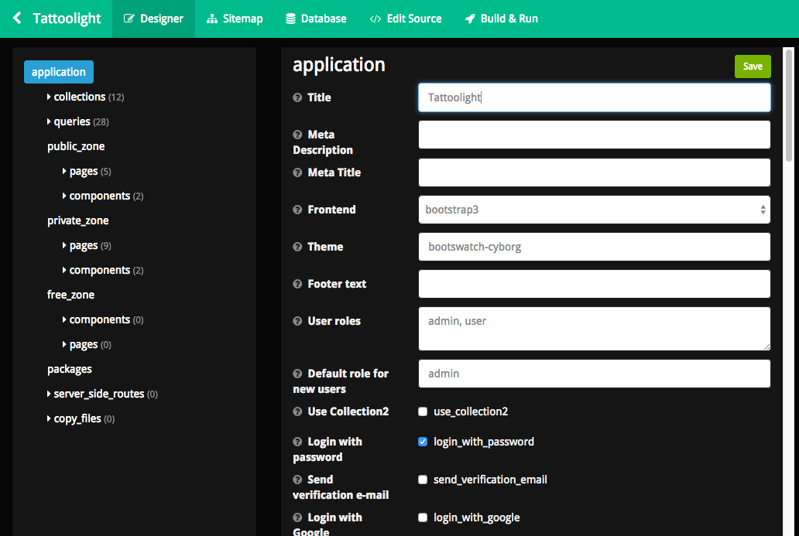
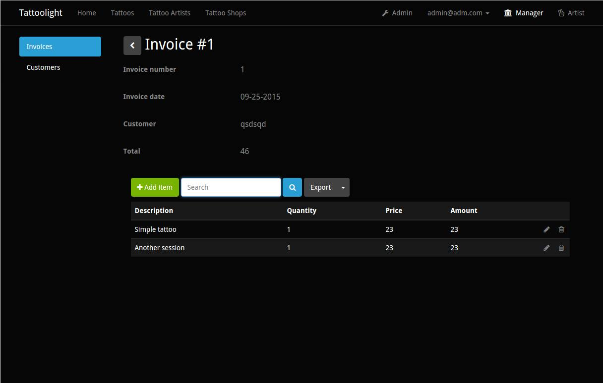
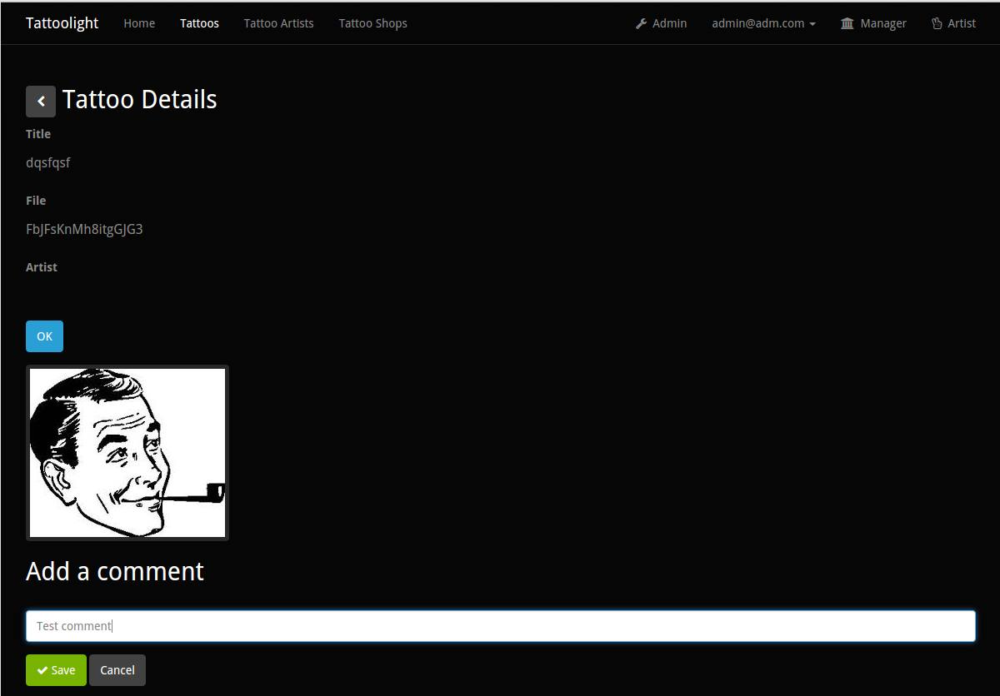
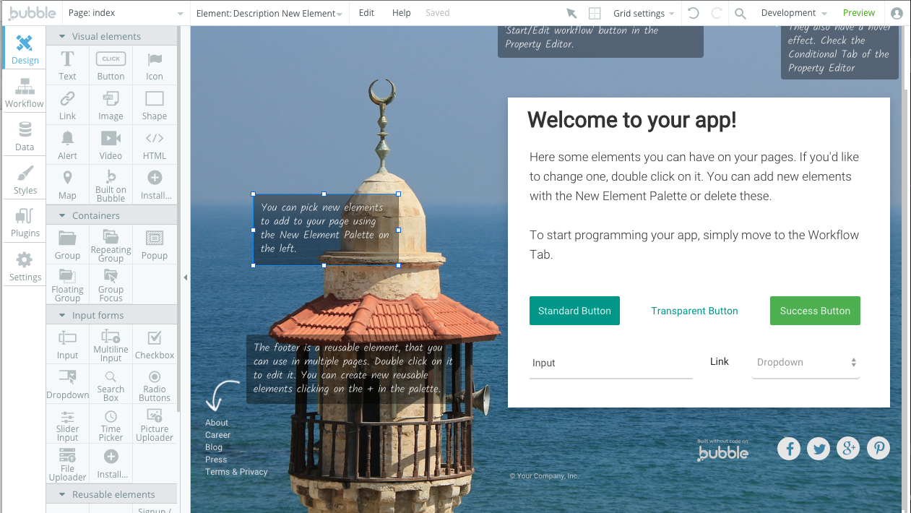

Don't learn how to write code
Last month I was contacted by a guy who wanted to hire me for a small programming gig. I heard him out and wrote down his requests. It was a platform for a special kind of B2B market. He needed the product fast, and accepted my hourly rate.
Two Skype calls and some discussions later, the product was finished, shipped and he was happy with it. Now it didn’t take me forever to get it done. I just knew how and what to do.
I don’t call myself coder though, anyone can learn how to code today. If you don’t believe me just look it up. There is an amazing amount of resources and tutorials to get you started with any given programming language.
It’s no longer for the elite
I am a Python guy, with more of a maths and statistics background. I’ve learned it alone with the help of the internet.
Recently though, I had to make an online tool and I wasn’t quite happy with what Python had to offer. I like Django and Flask but it would take a small team to get something useful done correctly.
By correctly I mean building and shipping something useful, robust and stable for the masses.
So I was looking for some options and found out about Meteor.js. It was all javascript and honestly I had no clue about javascript some months ago. It’s advertised as a code less do more solution and as I am sometimes lazy it sounded perfect; I always try to find fast ways to do stuff.

I was interested in Meteor.js so I looked it up and saw what people have achieved with it. I liked it so I started with the tutorials.
I somehow went past the first baby steps but then I wanted to know how to make something bigger. Estimating the time to achieve it, I was pretty much disappointed as it would involve lots of experimenting and debugging (remember, I’m not your kick ass javascript guy).
So I looked for easier ways to build Meteor.js apps and I found out about Meteoris and Meteorkitchen. Those tools are called code generators. You “design” your ideal app, or something close to it and it will spit out some code that’s ready to use.
After some testing, Meteorkitchen was the way to do it.

I use it for a Tattoo Community App (tattwoo.com, soon to be online), and it didn’t take me too much time to have it ready with image uploads, maps integration, invoice management, role access model etc. It was a cool MVP, the design had still to be done but more on that later.
The invoicing system: 
The image uploading: 
I had the code and I read it. That’s when I knew how things worked and what each part was supposed to do.
It’s better to learn by doing instead of passively following some guidelines. Most advances in Medecine today were made of analyzing and opening the human body. It should be the same for apps.
There are already tools to help you avoid coding
Meteor.js is a pretty new technology, and there are already tools that allow you to get going with it without having to code that much.
On top of that, the ressources online are enough to provide you with all the information you need to customize anything to a cellular level.
It took me 20 hours tops to develop the customers solution, because all the code was available online. I just had to find the right bits, squeeze them together and present them in an usable format.
It mainly consisted of searching, finding and testing, scientifically. With tools like searchecode, sourcefetch or stackoverflow, almost all problems are solved with some clever copy and paste. I already had the skelleton so it was not complicated.
In the future we won’t need to see code
I believe that in the future we won’t have to code as we think of it today. Coding will be replaced by designing, structuring and working with available technology to create new solutions.
Honestly, when faced with a problem, the only real challenge is to understand what questions to ask in order to solve it. What to look for is the only real thing you need to figure out.
Knowing how to code surely helps, but it’s no longer necessary, the truth being that the technology will change. The means of accessing will change.
Strategically implementing it is then the game changer for the years to come.
Instead of coding, build something
How many times at meetups I hear people saying they don’t have a coder so they can’t make their AirBnb or Uber for X. Or they don’t have a designer so their thing will look like shit.
I honestly smile a bit and then get back to my business.
If you look well enough, there are tools online to replace about any hard skill.
For example, I am not a designer and wanted to do something that looks cool (at least to me), with some online available tools like canva.com and dribble, I found out what colors would work together and how I could articulate my idea of a subscription box. Here’s how it looks:
I added an online shopping cart and all the good stuff without writing a single line of code. (well to be honest, I copied and pasted it, but I didn’t write anything)
The right way to do it
I am one of those who believes that choosing the right framework should be done wisely, but the most important criteria would be the time you would need to get your idea done.
When you look at it, companies always end up developing their own solution WHEN they need it. They also end up open sourcing their solution but they already did something in advance and had the validation they needed to grow and be able to invest in coders.
Coders are super smart people and their role is essential, don’t get me wrong.
It’s just that today, the average Joe can get an app or a web app out there without having to learn how to code. Truth is, it takes a lot of time to get it right and it’s very frustrating.
If you don’t believe me, go watch some people code on livecoding.tv, it’s cool and fun, but most of the part is debugging, fixing and finding out why it doesn’t work.
Your commitment should be to create stuff, and fix it later
Lots of people talk about technical debt, and I agree with them. But at some point, one has to get his fingers out of his nose and do something.
Technical debt is when you screw up a programming choice and you pay for it later, when you need to make a change.
But you don’t have to deal with this and be subject of analysis paralysis, truth is, we all make mistakes.
Leave this to the people who know what they do. You can hire them later once you've proven your concept is viable.
What you should focus on is find out ways to get your idea online. This is your business. Here is one way of doing it that I like a lot.
Meet Bubble.is
Bubble.is is a new platform that allows you to create your app or web app by dragging and dropping stuff around, in your browser.
They take care of the infrastructure, you just need to bring your idea to life. This is how it looks like:

You can use the elements on the left to build the skeleton of your app. There is a guy who used this to build a fully functional Twitter clone.
Think of anything, and you can build it with dragging and dropping stuff around. The emphasis is here on how to conceptually create something and get it working.
Just like Lego, it is super easy and super intuitive. I will release some videos soon to show how to achieve just that by cloning anything on my other website called NoCodeMVP.com.
Leave the coding to coders, and make your dreams come true
Just think of it, you no longer need to install all this crazy libraries and stuff on the computer.
You just need to have a new tab open on your browser, and from time to time create your own app.
Forget the command line, forget IDE’s but don’t forget that things can be easy if you are willing to ask the right questions.